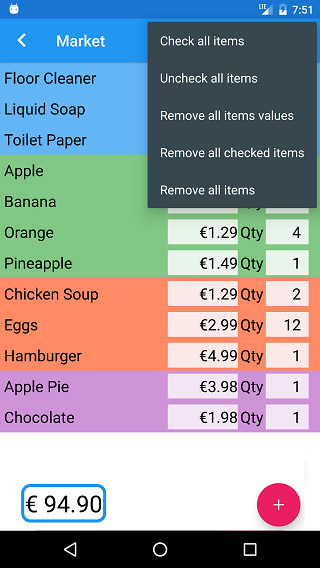

Tutorial - Menu Options
At the upper-right corner of your lists you'll find a Menu with these five options:
- Check all items
- Uncheck all items
- Remove all items values
- Remove all checked items
- Remove all items

Check all items
By tapping this option, you're selecting (~~strikethrough~~) all items from your list at once.
Just remember that the selection of an item doesn't decrease its value from the sum. This option is to help you to know what items are already purchased.
Uncheck all items
This option comes in handy when you want to reuse the list: you can deselect all items at once to use them again.
Remove all items values
This is another option for the reuse of the list: whether you want to reuse the entire list or just some of its items, you can remove all values at once and type them again when doing your next shopping.
This option changes all values to 0 (zero) and all 'qty' to 1 (one).
Remove all checked items
You can use this option to remove the items that you've purchased, but you don't want to buy them again using this same list.
Remove all items
This option clears your list. It makes your list like new so you can start a new one from scratch.